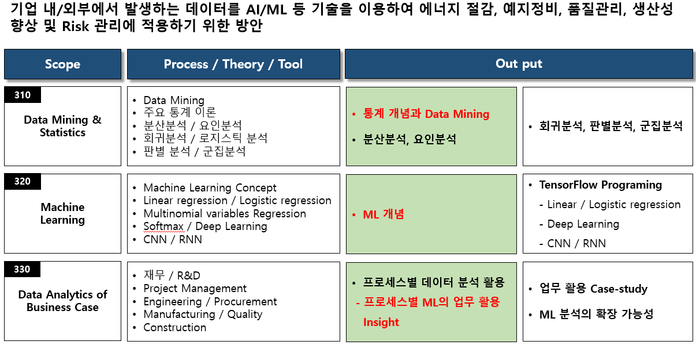
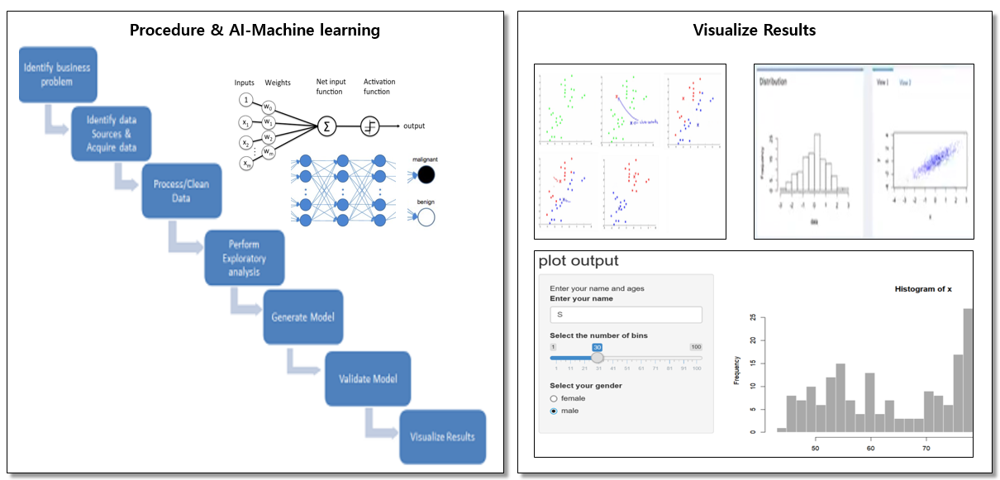
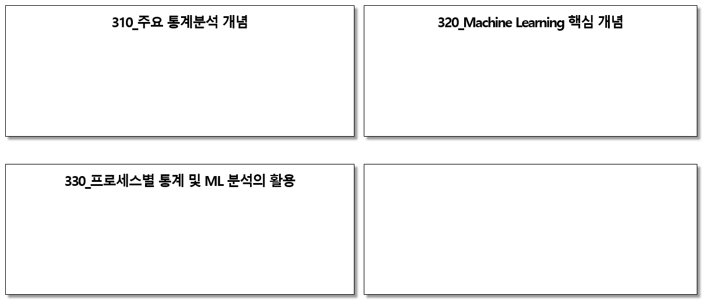

Knowledge scope - Digital Analytics

통계와 머신러닝에 대한 개념을 이해하고 기본적인 프로그램은 직원들 스스로 할 수 있게 하는 것이
데이터 분석업무의 시작이다.
주요 output - Data Analytics
Open source를 이용 통계와 머신러닝에 대한 개념을 업무에 활용하는 것을 스스로 체험하면서 어떤 가치를
낼 것인지를 찾아내고 사전 준비사항이 무엇인지를 깨닫고 시작을 할 수 있게된다.

source: https://www.r-bloggers.com/data-analysis-steps/
주요 Contents
